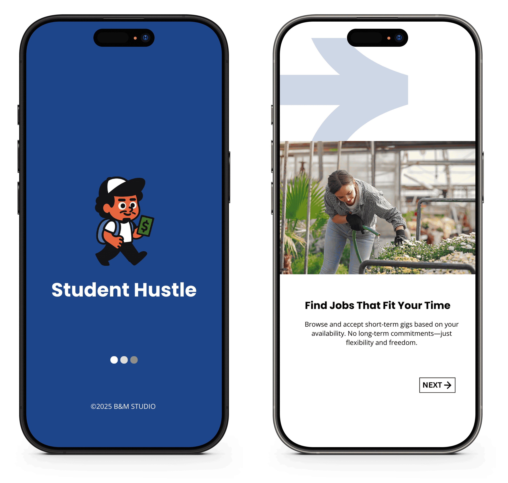
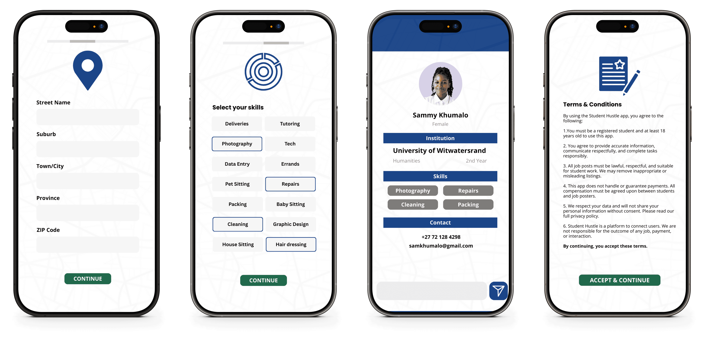
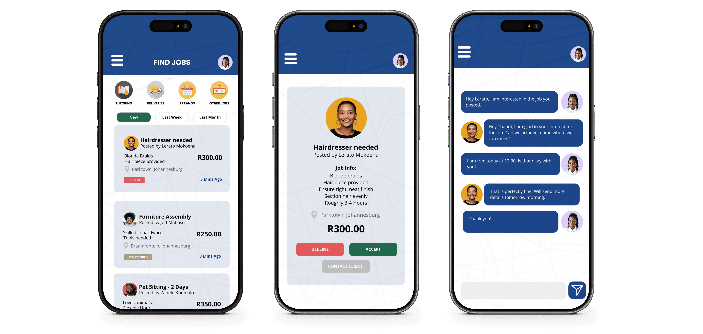

Student Hustle

Details
Project Name
Student Hustle
Project Type
2025 Final Exam Project
Platform
React Web Application
My Role
UI/UX & Web Developer
Tools
React JS, JavaScript, and CSS
Description
Our project is a student-focused, React-based web application designed to connect university and college students with short-term, flexible job opportunities that fit around their academic schedules.
The platform aims to empower students financially by providing an additional source of income, particularly for those in South Africa who face ongoing financial challenges and often rely on limited allowances, bursaries, or family support that do not fully cover their essential needs.
At the same time, the application serves clients by connecting them with reliable young individuals who are willing to take on short-term tasks that clients may not have the time, skills, or capacity to complete themselves.
User Research
Secondary Research: We reviewed existing literature on student financial stress in South Africa to ground the problem in real-world context. This helped validate the need for a flexible income solution and informed feature prioritisation.
Competitive Analysis: We analysed established platforms such as LinkedIn, Airbnb, WhatsApp, and local job marketplaces to understand common patterns in onboarding, navigation, messaging, and trust-building features (ratings, profiles, notifications).
Persona Development: Based on our research and personal experience as students, we created multiple user personas representing both students and clients, each with distinct goals, constraints, and motivations.
Heuristic Evaluation: We applied Nielsen’s usability principles (learnability, efficiency, memorability, error prevention, satisfaction) to evaluate our wireframes and prototype, guiding iterative design decisions.
User Personas
Goals
- Earn extra money to pay for transport and groceries.
- Find flexible jobs that won't clash with his engineering classes.
Frustrations
- Part-time jobs require fixed hours he cannot commit to.
- Most job opportunities are too far from campus.
Behaviours
- Checks his phone daily between classes.
- Prefers short-term commitments that he can plan around his study schedule.
- Looks for short-term jobs within a 10 km radius.
User Story
- "As a busy engineering student, I need a way to find quick, nearby jobs that fit into my unpredictable academic schedule so that I can earn money without falling behind in my coursework."
Goals
- Save up for final year research expenses.
- Keep a flexible schedule for final year project deadlines.
Frustrations
- Last-minute financial emergencies stress her out.
- Campus job boards are outdated and rarely updated.
Behaviours
- Searches for side gigs early in the month to avoid end-of-month money stress.
- Prefers physical jobs like moving, tutoring, or gardening for quick cash.
User Story
- "As a final-year student, I need to find occasional jobs that pay quickly so I can manage unexpected expenses without interrupting my academic work."
Goals
- Earn extra money to pay for transport and groceries.
- Find flexible jobs that won't clash with his engineering classes.
Frustrations
- Most part-time jobs require fixed weekly shifts, which limit his freedom.
- Opportunities for occasional are hard to find without personal connections.
Behaviours
- Prioritizes jobs that pay well for short hours (e.g., R200+ for a few hours).
- Likes to plan ahead and pick jobs for the following week based on his calendar.
User Story
- "As a student who is financially stable but goal-driven, I want to find occasional jobs that help me save more money without committing to a rigid part-time job, so I can build my savings while still enjoying my university experience."
Goals
- Gain work experience in graphic design while studying.
- Build a portfolio with real client projects.
Frustrations
- Struggles to find freelance clients without a network.
- Big freelance sites are too competitive and overwhelming.
Behaviours
- Updates her portfolio regularly.
- Prefers remote work she can complete from her laptop.
- Actively checks for creative gigs and small businesses needing design help.
User Story
- "As a design student, I want to find freelance projects that help me build my portfolio and earn an income so that I can grow my career even while studying."
Problems Faced
Problem 1- Difficulty finding relevant jobs quickly ❌
Early versions of the app displayed job listings without sufficient filtering, making it harder for students to find relevant opportunities.
Solution ✅
We introduced category-based filters and planned future enhancements such as location and time-posted filters to improve discoverability and efficiency.
Problem 2- Hard information to understand ❌
Early job listings did not provide any indication of a student’s reliability, which could discourage clients from posting or accepting applications.
Solution ✅
We introduced a rating and review system that allows users to evaluate each other after job completion, adding transparency and increasing user confidence in the platform.
Problem 3- Weak Security ❌
Earlier iterations allowed users to navigate the app without authentication which broke the sense of security and made personalised features (profiles, job applications) feel unreliable.
Solution ✅
We introduced protected routes and backend-supported authentication, ensuring users must sign in before accessing core
Wireframes
These wireframes show the early design ideas for the Student Hustle app and give an overview of how the main screens are laid out. They were created to reflect how the final app is expected to look and feel, helping to visualise the structure before development begins. While designing the wireframes, I focused on how users would move through the app and interact with each screen. The user journey starts with an introduction that explains the purpose of the app, then guides users into creating a profile where they can share their details and skills. From there, users are taken to the job-finding section, where they can browse and explore available opportunities. The overall aim of these wireframes is to keep the experience simple, clear, and easy to follow, so students can quickly understand the app and find jobs without unnecessary complexity.
Introduction to app

These wireframes highlight the user’s journey from the very start of the application. Users are first introduced to a series of screens that explain the purpose of the app and its main features. This introduction then naturally leads them to the sign-up page, helping new users understand what the app offers before creating an account.
Create Profile

These wireframes focus on the sign-up process, where users are required to enter necessary information such as their name, address, and other relevant details. Due to the nature of the application, additional information is required to make the platform more secure and reliable. This helps create a sense of trust between clients and student workers. The inclusion of terms and conditions also encourages respectful and appropriate use of the application.
Find Jobs

These wireframes show the home page, where users can access available job opportunities. Jobs are organised into different categories to make browsing easier. The wireframes also demonstrate the journey from viewing a job listing to accessing more detailed information and contacting the client who posted the job.
Learning
Iteration improves clarity and cohesion: Revisiting and refining existing features created a smoother, more connected user journey than continuously adding new functionality.
Trust is a core UX principle: Ratings, reviews, and secure access transformed the platform from a simple job board into a credible digital marketplace.
Authentication and protected routes: significantly influence user trust and perceived platform credibility.